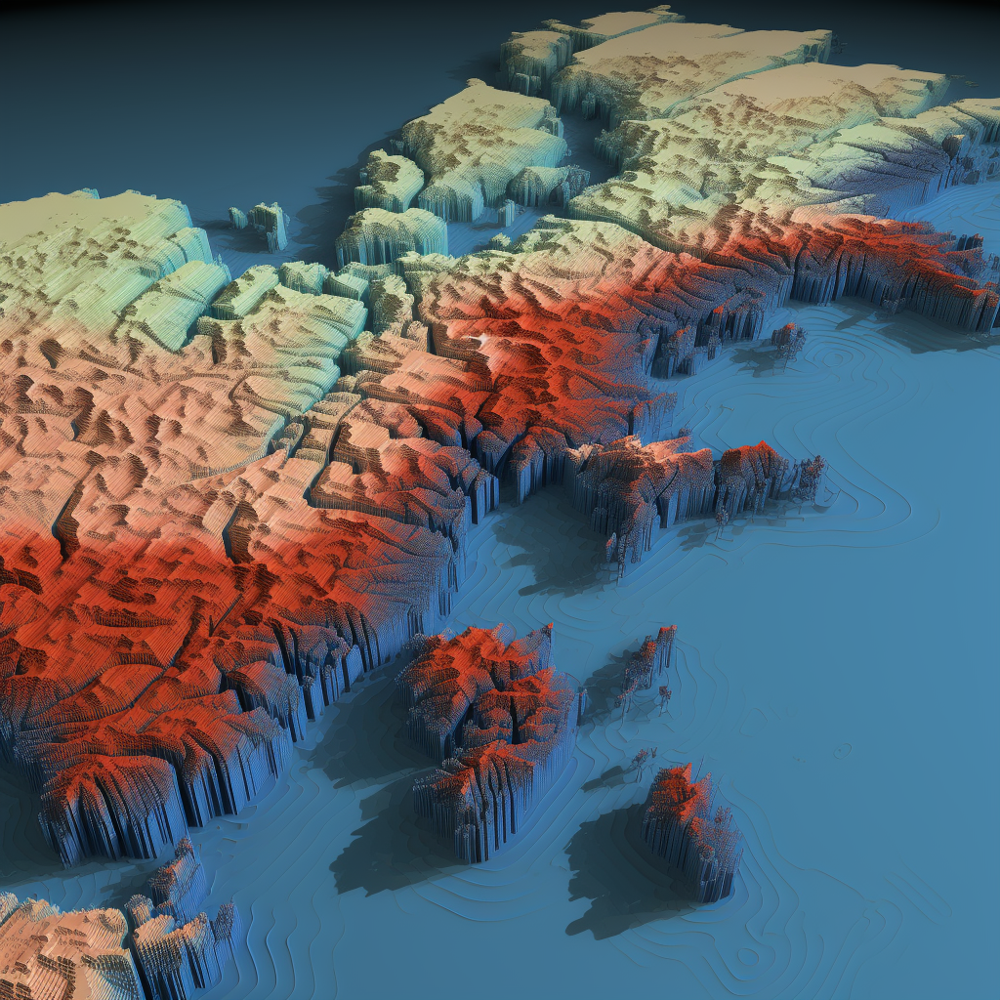
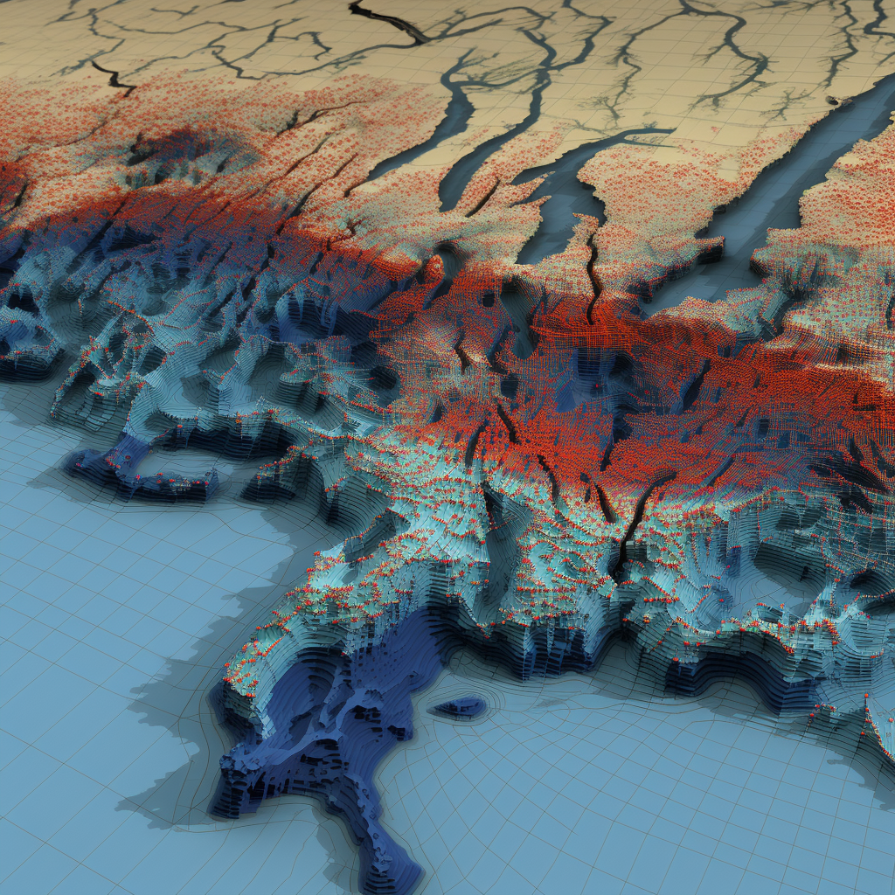

- There may be some multicollinearity between the water allocation level (water in) and water stress level (water out). Although the Variance Inflation Factor (VIF) values for these two regressors were below 5 (specifically, 4.33) and their correlation coefficient was -0.41, these values are not low enough to completely dismiss the possibility of multicollinearity. For instance, a region with a higher water supply might tend to use more water, potentially influencing its water stress level.
- This research project primarily focused on the U.S. and might not be entirely applicable to other countries and regions around the world, particularly in areas with limited data availability. Nevertheless, the research methodologies and predictive modeling procedures developed in this study could still be applied effectively if sufficient relevant data are available.
- Bertolotti, A., Luo, T., & Suo, Y. (2020, July 15). Impacts of Water Stress on Physical Assets Using REITs as a Case Study. SSRN.
- Cherkassky, Vladimir; Mulier, Filip (1994). Cheeseman, P.; Oldford, R. W. (eds.). "Statistical and neural network techniques for nonparametric regression". Selecting Models from Data. Lecture Notes in Statistics. New York, NY: Springer. doi:10.1007/978-1-4612-2660-4_39. ISBN 978-1-4612-2660-4.
- European Central Bank (2020, May), Guide on climate related and environmental risks.
- Ganguli, P., Kumar, D. & Ganguly, A.R. US Power Production at Risk from Water Stress in a Changing Climate. Sci Rep 7, 11983 (2017). https://doi.org/10.1038/s41598-017-12133-9.
- Hochreiter, Sepp; Schmidhuber, Jürgen (1997, Nov 01). "Long Short-Term Memory". Neural Computation.
- Koenker, Roger (2005). Quantile Regression. Cambridge: Cambridge University Press. pp. 2. ISBN 9780521845731.
- LeCun, Yann; Bengio, Yoshua (1995). "Convolutional networks for images, speech, and time series". In Arbib, Michael A. (ed.). The handbook of brain theory and neural networks (Second ed.). The MIT press.
- Malhotra, Pankaj; Vig, Lovekesh; Shroff, Gautam; Agarwal, Puneet (2015, April). "Long Short Term Memory Networks for Anomaly Detection in Time Series". European Symposium on Artificial Neural Networks, Computational Intelligence and Machine Learning – ESANN 2015.
- WRI (2020, May), Water: mapping, measuring and mitigating global water challenges.
Executive Summary
In this comprehensive project, we as researchers combined non-public Bloomberg data and public records from the World Resources Institute (WRI) and the United Nations (UN) to investigate the impact of water stress on U.S. Real Estate Investment Trusts (REITs). The project, a subdivision of BlackRock's broader Troubled Waters Investment Research ESG Project, employed advanced data visualization techniques, including QGIS and Python, to create multivariate dynamic 3D interactive maps. These maps highlighted severe water scarcity in areas like coastal UK and California. Further, the study utilized a quantile analysis model to explore the effects of water stress on different tiers of U.S. REITs, revealing significant correlations between water allocation and stress levels with financial returns. To enhance prediction accuracy, the study transitioned from parametric to non-parametric quantile regression models, and developed new feature variables for a 10-year market projection. Utilizing machine learning methods, including CNN, RNN and LSTM models, we predicted a substantial increase in high water stress levels by 2030, which could have significant negative implications for the U.S. REITs market. This prediction, notably accurate with the LSTM model's 5% MAPE, emphasizes the importance of considering environmental factors in real estate investment decisions, particularly in the face of escalating global water scarcity. This research offers valuable insights for future real estate investment strategies, highlighting the need to consider environmental factors like water scarcity.
Data Introduction
This project incorporated daily panel data from non-public Bloomberg sources, covering REITs daily returns (calculated on an annual rate basis) from 2014 to 2020, and the SNL database for REIT properties worldwide. Additionally, it used public water allocation and scarcity stress data from the World Resources Institute (WRI) and the United Nations (UN) World Water Development Report. The REITs data encompassed global financial details like the location (longitude and latitude) of the REITs property, its return in percentage and U.S. dollars, market value, operating costs, and insurance premiums. The water data included geographical information (longitude, latitude, and altitude) for various global regions, local population figures, average GDP per capita, precipitation levels, water allocation levels (ranging from 1 to 4), and water scarcity stress levels (ranging from 1 to 5).
It's important to note that while this project primarily focused on U.S. regions, it was part of the larger BlackRock Troubled Waters Investment Research ESG Project, which encompassed research in many other countries worldwide, including Malaysia, the Philippines, Japan, and Australia.
Mapping Visualization
To effectively visualize the comprehensive geographical water data with customizable settings, I employed QGIS and Python to develop a multivariate dynamic 3D interactive map. The foundational structure of this map is built upon data of longitude, latitude, and altitude, while an additional top layer provides the functionality for users to select from various variables, such as water scarcity stress levels. This interactive platform offers users the flexibility to zoom in, zoom out, rotate the view, switch between different Coordinate Reference Systems (CRS), modify the date, and save their customized output as a PNG file. Displayed below are two sample outputs, one for the southeast regions of the UK and the other for the west coast regions of California, USA:
-


From the images above, it is evident that the coastal regions in the south of the UK and the west of California, USA, are experiencing severe water scarcity issues.
Quantile Analysis Modeling (parametric and non-parametric)
Based on the results from other team members (as seen in the updated SSRN paper), we have already established a clear association between water stress and REIT financial metrics. To delve deeper into the effects of water stress on U.S. REITs with varying return thresholds, we reformulated our research question. Specifically, we aimed to determine whether the association is significant for REITs with high returns, defined as those in the upper 75% threshold, and if so, to what extent.
In pursuit of this goal, we merged the two baseline datasets of REITs and water data from 2014 and developed a quantile analysis model. For each U.S. REIT property, we calculated the total annual return for 2014 using the following formula, which considers consecutive daily returns (notably, the total trading days in 2014 were 252, not 365):
We categorized REITs based on their annual return percentages, defining high annual return REITs as those in the upper 75% threshold, middle return REITs at the 50% threshold, and low return REITs at the lower 25% threshold. The corresponding Tau-quantiles for these categories are 0.25, 0.50, and 0.75. The model incorporating these quantiles is presented as follows:
Utilizing a 0.05 significance level, the parametric quantile model produced three regression lines corresponding to the 0.25, 0.50, and 0.75 tau values. The p-values (Pr > |t|) and coefficient estimates are summarized in the following table:
Since all the p-values are below the 0.05 alpha threshold, we observed significant effects of water allocation level and water stress level on REITs returns across different tiers. For instance, for high-return REITs in the U.S. (0.75 tau), holding all other factors constant, an increase of one level in water allocation is associated with a 0.36% increase in REITs returns, while an increase of one level in water stress corresponds to a 0.46% decrease in returns. These effects are more pronounced for high-return REITs compared to those with middle returns in the U.S. (0.50 tau). Utilizing the values for tau and our two regressors, we were able to predict the returns of U.S. REITs for the year 2014.
To address potential non-linearity in our model predictions, we transitioned from a parametric quantile model to non-parametric quantile regression models, incorporating various values of the penalization parameter lambda (50, 75, 100, 125, 150, 175, and 200). A higher lambda value results in a smoother modeling line. Using the values of tau, lambda, and the two regressors, we compiled the prediction results for U.S. REITs returns into a sensitivity benchmarking table. The table provided below serves as an example, showcasing U.S. REITs returns with three different levels of water allocation and water stress:
CNN, RNN and LSTM Modeling for Multivariate Time Series Analysis
To project the U.S. REITs markets and water stress over the next 10 years, we developed two new feature variables for our analysis. To moderate the extreme values in daily U.S. REITs returns, I utilized the median daily return from over 43,000 U.S. REITs properties between 2014 and 2020 as a representative measure of the overall daily U.S. REITs returns, recording it in the first new time series column. For the second variable, I calculated the daily proportions of each water stress level (1-5) across these properties to gauge the severity of water stress in the U.S., resulting in five new columns. I then updated the Isolation Forest algorithm, applying it with the hyper-parameter 'contamination' set to 0.01 on these six columns, to remove extreme outliers for anomaly detection.
Given our focus on the most severe water stress levels (4 and 5), we extracted data only for these levels to conserve computational resources. For implementing machine learning on multivariate time series data, I conducted an 80:20 train-test split on these new columns, maintaining the temporal order without shuffling, and applied an expanding window split with 20 folds for cross-validation. To preserve the integrity of our data, we trained 2D Convolutional Neural Network (CNN) models using PyTorch Conv1d, short memory Recurrent Neural Network (RNN) models, and Long Short-Term Memory (LSTM) models. We summarized the prediction results for 265 days in 2030 by calculating the overall annual return using the previous formula and the average proportions of water stress levels 4 and 5 for the entirety of 2030. Below are the prediction results, including the Mean Absolute Percentage Errors (MAPE) on the test sets:
Based on the predictive performance of the best model, the Long Short-Term Memory (LSTM) network, with a MAPE of around 5%, it is projected that by 2030 nearly 55% of U.S. REIT properties will experience high water stress levels. This represents a 120% increase from the 25% level recorded in 2014. Such a substantial rise in water stress is likely to have significantly negative effects on the U.S. REITs market.